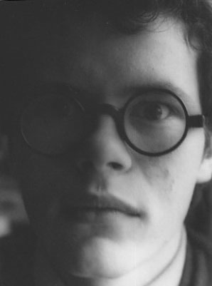
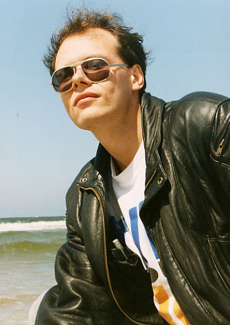

1983 m
Arnoldas Lukošius
Gimiau Anyksciuose, tiksliau Kurkliuose, bet pats faktas ivyko Anyksciuose. Kai parveze i Kurklius, bobute sako: "labai jau mazas - negyvens.."
Iki tu metu buvau labai storas ir lysas, o svarbiausia - gyvenau. Istisus metus tik ta ir dare, kad maitino. O po metu nustojau
visai valgyti. Ketveriu metuku buvau labai liesas ir susirgau dziova. Mane nusiunte i sanatorija.
Sanatorijoje mane nukirpo plikai, idant uteles neuzsiveistu. Pradejo kaltis juodi, o ataugo visiskai juodi plaukai. Mano motinai
lygiai taip pat buvo. Jai seseriu metu pirma karta truputi pakirpo plaukus, ryte ji pabudo kietais ir visai juodais plaukais.
Dar atsimenu, kad budamas treju metu iskritau per langa is pirmo auksto galva zemyn. Pas dieduka namie.
Atsimenu fleitos garsa. Atsitrenkiau i smelio dezes krasta ir nusiplesiau puse ausies. Ne viena karta buvau riedejes i rusi betoniniais laiptais, bezaisdamas slepyniu.
O siaip mazas budavau geras. Viska darydavau, ka man sakydavo. Pastatydavo laikrodi ir sakydavo: "kai sita rodykle bus cia, galesi keltis, o dabar tu turi eiti pietu miego miegoti"
Nors as visai nenoriu miego, bet guliu ir laukiu, kkol rodykle bus toje vietoje, ir galesiu keltis.
Nors tevu namuose nera ir zinau, kad greitu metu jie nepareis. As pasiimdavau knygas ir vartydavau jas. Skiemenim ismokau skaityti gal kokiu ketveriu metu budamas, o penkeriu jau skaiciau normaliai.
Is knygeliu suzinojau, kad yra dinozauras ir aiskinau darzelio draugams.
Antroj klasej atvaziavau i Vilniu. Tada buvau labai "rezkas": akmeni suvariau kiemo draugui i galva, nes kazka ne taip pasake.
Po to dariausi vis labiau nepiktas. Dabar visai.. Ta prasme, nemegstu fizines agresijos, Galima gi pasakyti zmogui taip, kad verktu tris savaites, o kai sumusi, tai verks tik valanda.
Sestoje klaseje, kai visa klase bego is pamoku, mes su Andrium buvom pasilike, nebegom. Kodel dviese pasilikom, nezinau.
Turbut tai buvo protestas: Andrius pasake, kad jam tevai pasake, kad negalima begti is pamoku, kad tai yra nesveika. Visa klase bego (solidarumas), o mes kaip kompanionai protestavom tiesiog pres visus, labai jau neprotestuojanciu metodu.
"Foje" tvarkingai veluodavo i pamoka, nes repetuodavo per pertrauka ir negirdejo skambucio. Iskart visi prie lentos - fizikos pamokoj tokia taisykle buvo. Ir gaunam pazymius atitinkamai: as - penkis arba keturis, Algis - penkis arba keturis, Andrius - tris arba keturis, Tarasas Darius - gauna du arba tris. Ir kiti dalykai panasiai atrode.
Vienuoliktoj klasej, skambina aukletojas mano motinai: "atejo milicija, ir jusu sunus gali patekti i nepilnameciu iskaita (nors man jau buvo astuoniolika). Jis klasej daugiausia pamoku praleides." O as kiekviena diena ateidavau i mokykla saziningai,
daznai budavau pirmoj, trecioj, penktoj pamokoj, arba antroj, sestoj, arba antroj, trecioj, ketvirtoj, arba pirmoj, ketvirtoj, na, tokia netvarka. Kita laika prasededavau kambareli - lituodavau stiprintuvus.
Astuntoje klaseje jau turejome programa. Programa minimum - tai populiariausia grupe Lietuvoje, ir programa maximum - tapti populiariausia grupe pasaulyje.

1994 m
Andriui tevai neleido baigti muzikos mokyklos. Unikalus atvejis, mane tai pritrenke. As baisiai nenorejau joje mokytis, o jam neleido. Su tevais man nebuvo jokiu problemu.
Algis pradejo su mumis groti nuo pradziu, bet jis nekoncertavo, nes jam tevas neleido. Liepe pasirinkti: ar folklorinis, ar tas ansamblis, nes ir tas, ir tas trukdo mokytis. Algis pasirinko folklorini. Bet po to jis grizo.
Vis del to as manau, kad mes - draugai, nes per visa laika, kai as negrojau niekada nebuvau nutraukes santykiu. Pasiklabedavau su Andrium, kartais buvo tokiu saltu sankykiu laikotarpis, gal net labiau ne salcio, o maivymosi: zinai, sedi mieste su draugais ir, tarkim
ateina Andrius: "tai ko nori?" Neatrodo, kad dideli draugai susitiko..
Na apie Andriu trumpai sunku pasakyti.. Jis visoks. Na, toks kaip visi. Kartais, man taip atrodo, kad ji "uzveikia" populiarumas.
Daugelis sako, kad jis labai is auksto i visus ziuri, saltai taip, su bajeriukais tokiais. Bet man atrodo, kad jie i ji zvelgia labai is apacios, gal pritupia pries kalbedami? O rezultate toks jausmas, kad po koncerto kiekviena mergina turi ji isimyleti, o kiekvienas vaikinas - i snuki duoti.
Tikriausia jam yra labai nepatogu gyventi, del to ir susidare isorinis ispudis, daznai visai kitoks negu yra, bet.. Tai zmogus - asmenybe. Jei jis man paskambintu trecia valanda nakties, kad reikia mano pagalbos, as eiciau.
Karta grojom palangoj "ant plosciadkes" pagal irasa. Algio jau nebuvo. Dvi dienas turejome, bet koncertavome tik viena, nes pirma vakara atvaziavo klasioke Fausta ir musu drauge Olga. Andrius su Romu Rainiu buvo vienam kambary, o mes visi gyvenom kitam kambary. Tame kambaryje mes buvom septyniese. Vienu zodziu, jie nuejo ir nupirko keturis butelius
degtines, viena pakeliui sudauze, o mums teatnese viena buteli, kuri iteike tyliai. Mes ji paslepem ir pasimetinejom, kad uzmiegame, nes laukeme, kol visi uzmigs, kad mums butu daugiau. O jie tuos du butelius..
1986 metais is "Lituanicos" atejo Rita Starkeviciute ir Bluvsteinas. Jie tada labai sarkastiskai paklause, ka mes grojam, tuo paciu pademonstruodami, kad neturi elementaraus skonio. Mes jau grojom "Lauzo sviesa", kuri dar ilgokai skambes.
Bet jie kritiskai i mus ziurejo: "Na, tiek to, galit sudalyvauti tame "Vilciu konvcerte"", kuriame koncertavo visos pradedancios grupes.
Su fanais is viso mazai bendrauju, beje, nes jie atsirado tuo metu, kai manes jau nebuvo. As nelabai suprantu sitokius dalykus. As manau, kad "Foje" megdziojimas turi pasireiksti savo individualybes kurimu, o ne Andriaus aprangos megdziojimu ar kazkuo panasiu.
Programa "minimum" ivykdyta. O net komunistai zlugo vykdydami programa "maximum". "Foje" ateitis, manau, priklauso nuo to, ka mes dabar sugebesime padaryti.
Nezinau, ar megstu svajoti, bet svajoju. Tik nieko nedarau, kad tos svajones issipildytu. Is viso megstu nieko nedaryti. Nieko nekeisti. Blogai tai. Kartais reiketu kazka padaryti, kad butu geriau, bet kazkaip.. Ai, nieko neiseina.
O gyvenimo tikslas, kad kada nors ivertintu.
Zinai, kai Amerikoj daziau sienas ir man mokejo po 5 dolerius uz valanda, buvo sazininga.
Arnoldas
(ištraukos iš knygos "Aš atsisuksiu atgal")